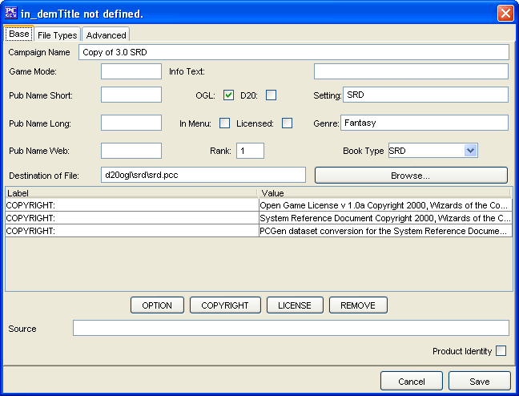

The Base Tab has everything required to make a new Source. The remaining tabs are for more advanced Source creation. The Sources created will be saved into the data/custom directory under the name of customSources.lst.
The Campaign Name is where you will enter the full name for your Source.
The Game Mode represents the type of game (E.g. 3e - Third Edition).
Info Text is a short description of the Source.
Pub Name Short is the Publisher's Short name.
Tick OGL to indicate that the source is Open Gaming License compliant. It's copyright information is then inserted into the OGL license.
Tick D20 to display the d20stl and logo when loaded.
The Setting is the game world the source belongs to.
Pub Name Long is the Publisher's Long name.
The In Menu flag tells PCGen to display this campaign in the Settings>Campaigns menu. When selected, it will unload all other campaigns, and load this campaign. It will also set any options listed.
The Licensed flag indicates if the source is licensed
The Genre records whether the source is fantasy, modern or sci-fi, etc.
Pub Name Web is the main website for the Publisher.
Rank is the loading priority. 1 is the highest priority.
Book Type displays whether the source is a Campaign Setting, a Core Rulebook, a Supplement etc.
The Destination of File sets where the source information will be stored
The Option, Copyright and License buttons allow legal information to be entered.
The Remove button removes a selected item from the list.
Click on the Value to edit the displayed text.
The Product Identity checkbox is to denote if the Source's name being created is the Product Identity of a publisher
The Cancel and Save buttons, which appear on every tab, are used to either cancel the Source creation or save it to the customSources.lst file.